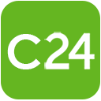

Job boards in Africa
24 job boards, aggregators and platforms serving Africa, with API status and partner program details.
| Board | Prominence | Type | HQ | Language | API | Partner program |
|---|---|---|---|---|---|---|
| Small #139,656 | Job board | South Africa | English | API status unknown | unknown | |
| Small #139,999 | Niche job board | Not recorded | Not recorded | API status unknown | unknown | |
| Small #161,798 | Job board | Nigeria | English | API status unknown | unknown | |
| Small #257,073 | Niche job board | Not recorded | Not recorded | API status unknown | unknown | |
 | Small #262,138 | Job board | South Africa | English | API status unknown | unknown |
| Small #319,629 | Job board | Not recorded | Not recorded | API status unknown | unknown | |
| Small #370,926 | Job board | Kenya | English | API status unknown | unknown | |
| Small #391,271 | Niche job board | Not recorded | English | API status unknown | unknown | |
| Small #397,569 | Job board | Not recorded | Not recorded | API status unknown | unknown | |
| Small #683,375 | Job board | Not recorded | English | API status unknown | unknown | |
| Not comparable | Job board | Not recorded | English | API status unknown | unknown | |
| Not comparable | Government job site | Not recorded | Not recorded | API status unknown | unknown | |
| Not comparable | Job board | Not recorded | Not recorded | API status unknown | unknown | |
| Not comparable | Job aggregator | Not recorded | Not recorded | API status unknown | unknown | |
| Not in top 1M | Job aggregator | Not recorded | Not recorded | API status unknown | unknown | |
| Not in top 1M | Job board | Not recorded | Not recorded | API status unknown | unknown | |
| Not in top 1M | Job board | Not recorded | Not recorded | API status unknown | unknown | |
| Not in top 1M | Job board | Not recorded | Not recorded | API status unknown | unknown | |
| Not in top 1M | Job board | Not recorded | Not recorded | API status unknown | unknown | |
| Not in top 1M | Job board | Not recorded | Not recorded | API status unknown | unknown | |
| Not in top 1M | Job board | Not recorded | Not recorded | API status unknown | unknown | |
| Not in top 1M | Job board | Not recorded | Not recorded | API status unknown | unknown | |
| Not in top 1M | Government job site | Not recorded | Not recorded | API status unknown | unknown | |
| Not in top 1M | Job board | Not recorded | Not recorded | API status unknown | unknown |